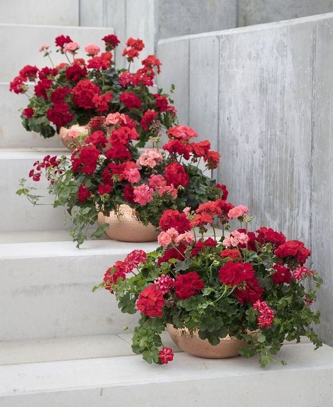
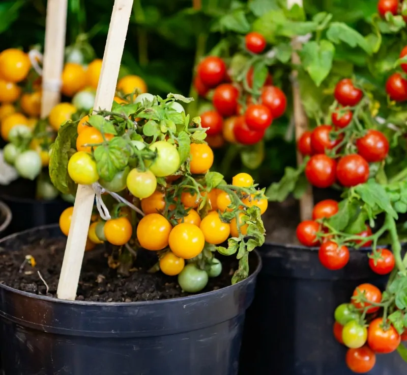

Ornamental plants
Ornamental plants are plants that are grown for decorative purposes in gardens and landscape design projects, as
houseplants, cut flowers and specimen display. The cultivation of ornamental plants comes under floriculture and
tree nurseries, which is a major branch of horticulture

Flowering plants
Flowering plants are a type of vascular plant that produces flowers in order to reproduce. Flowering plants
produce seeds within a fruit. The scientific name for flowering plants is angiosperms. Flowering plants follow a
specific life cycle.Flowering plants are the most diverse group of land plants

Fruit trees
A fruit tree is a tree which bears fruit that is consumed or used by animals and humans — all trees that are
flowering plants produce fruit, which are the ripened ovaries of flowers containing one or more seeds. In
horticultural usage, the term "fruit tree" is limited to those that provide fruit for human food

Vegetable plants
Vegetables are parts of plants that are consumed by humans or other animals as food. Vegetable plants
collectively refer to all edible plant matter, including the flowers, fruits, stems, leaves, roots, and
seeds.Most vegetables are grown all over the world as climate permits.